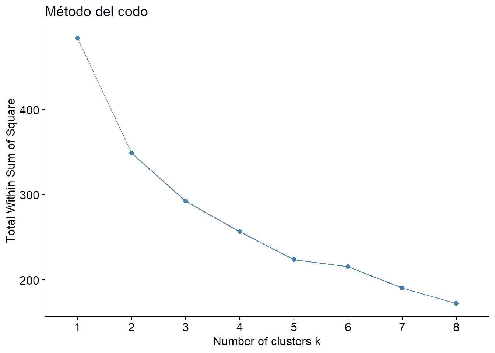
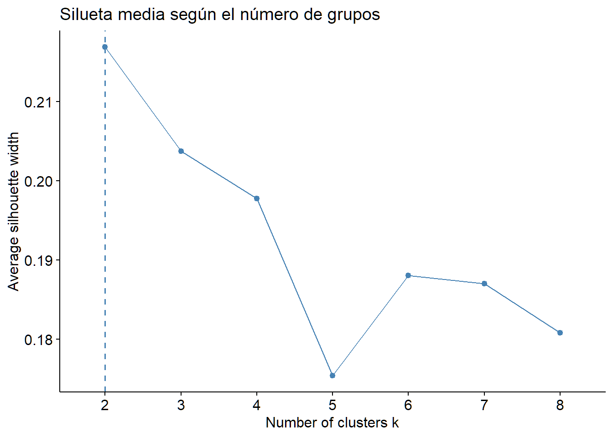
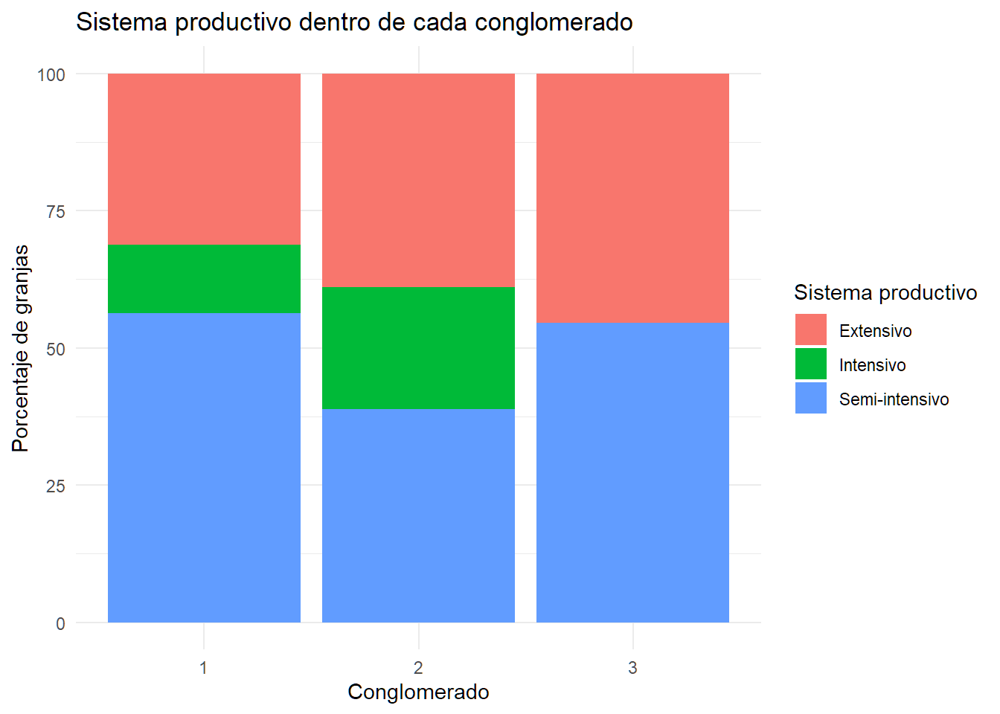
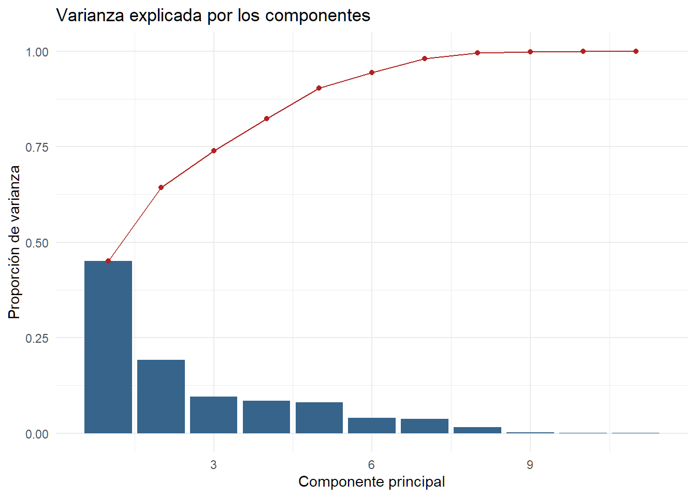
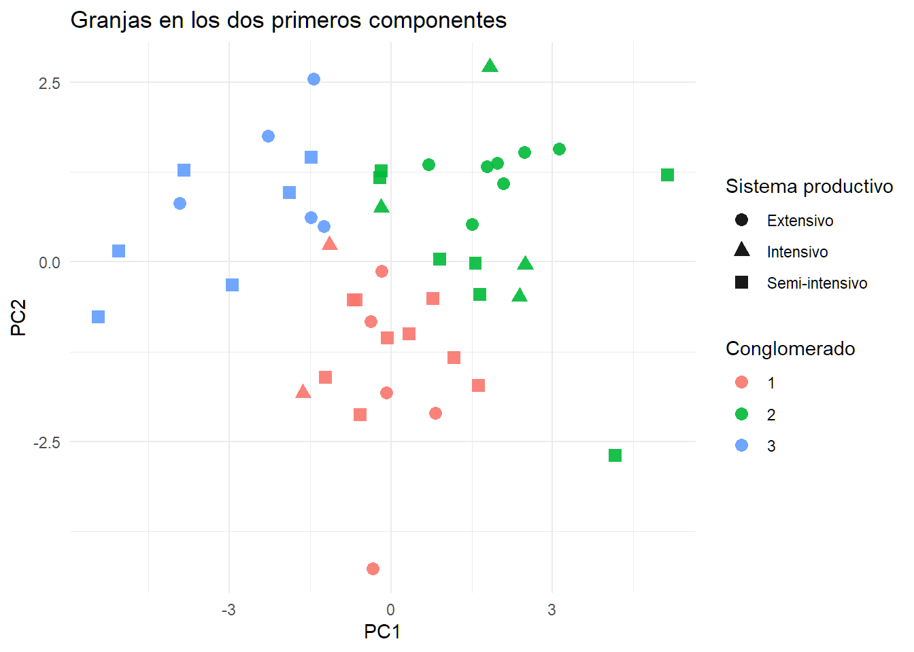
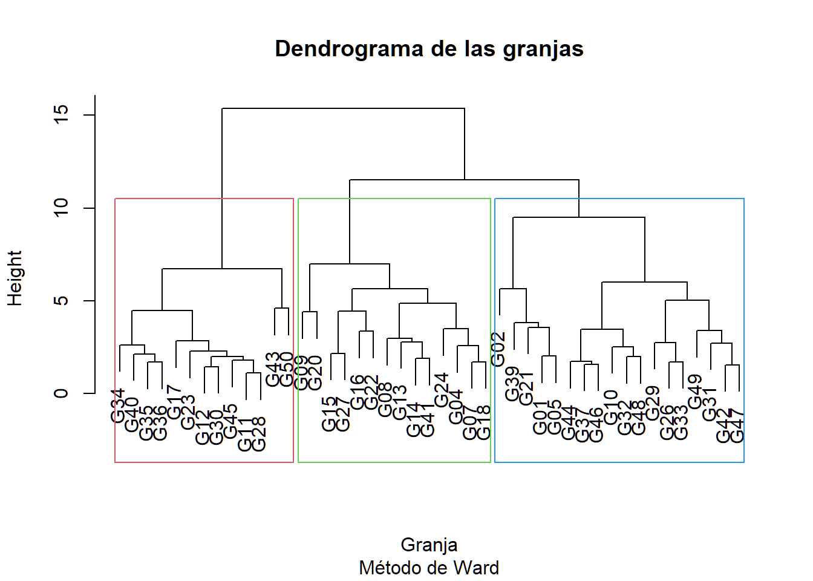
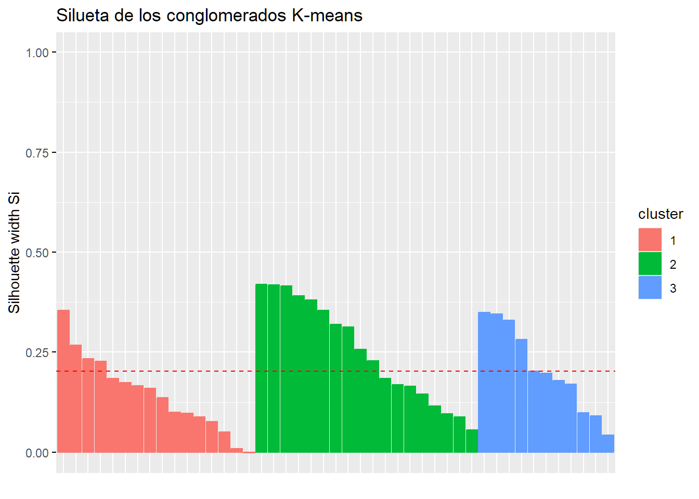
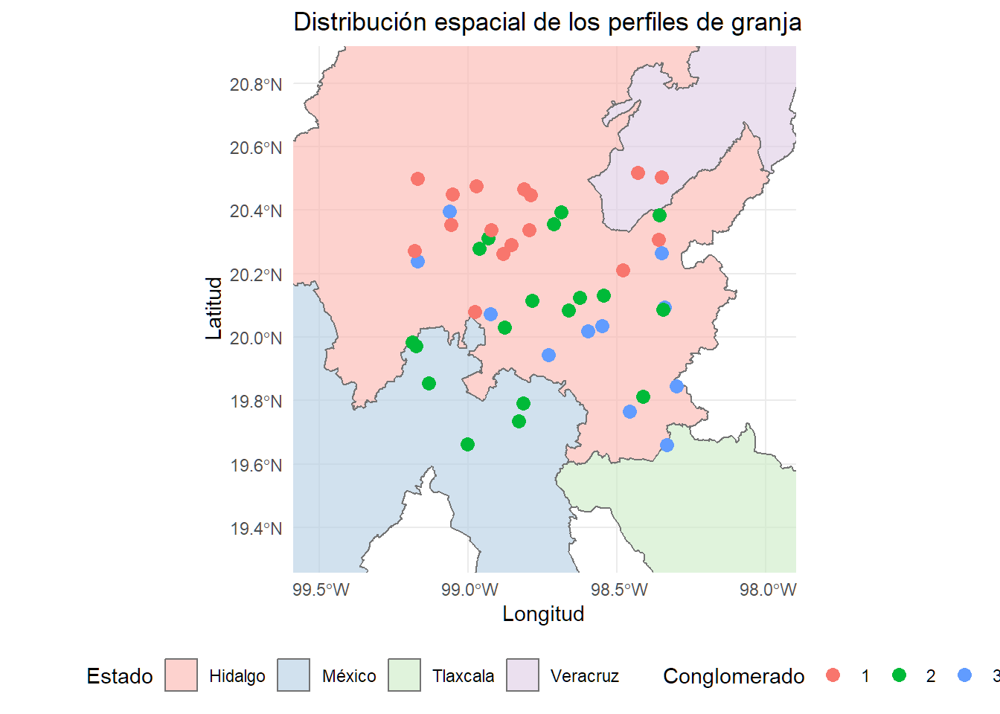

Código
# install.packages(c(
# "tidyverse", "cluster", "factoextra",
# "tidymodels", "sf", "patchwork"
# ))
library(tidyverse)
library(cluster)
library(factoextra)
library(tidymodels)
library(sf)
library(patchwork)En este capítulo utilizaremos métodos no supervisados para identificar perfiles de granjas y representar su semejanza en pocas dimensiones. Trabajaremos con una fila por explotación, porque el objetivo es segmentar granjas y no agrupar las miles de mediciones repetidas de los animales.
Los conglomerados son construcciones algorítmicas. No deben convertirse automáticamente en categorías biológicas o administrativas. Su interpretación requiere revisar las variables utilizadas, la escala, la estabilidad y la distribución geográfica de los grupos.
# install.packages(c(
# "tidyverse", "cluster", "factoextra",
# "tidymodels", "sf", "patchwork"
# ))
library(tidyverse)
library(cluster)
library(factoextra)
library(tidymodels)
library(sf)
library(patchwork)# Instalar los paquetes si es necesario.
# install.packages(c(
# "sf", "spdep", "spatialreg", "tidyverse",
# "readxl", "Matrix"
# ))
library(tidyverse)
library(readxl)
library(sf)
library(spdep)
library(spatialreg)
library(Matrix)
# Nombre del archivo Excel.
archivo <- "../datos/base_borregos_espaciotemporal_Hidalgo.xlsx"
# Consultar las hojas disponibles.
excel_sheets(archivo)[1] "datos_long" "granja_tiempo" "animales" "granjas"
[5] "W_vecindad" "distancias_km" "diccionario" "LEEME" # Importar la tabla longitudinal.
datos <- read_excel(archivo, sheet = "datos_long")
set.seed(2026)
animales_muestra <- datos |>
distinct(animal_id) |>
slice_sample(prop = 0.2)
datos_b2 <- datos |>
semi_join(animales_muestra, by = "animal_id")
datos_b2 <- datos_b2 |>
mutate(
animal_id = as.factor(animal_id),
granja_id = as.factor(granja_id),
sexo = as.factor(sexo),
raza = as.factor(raza),
tratamiento = as.factor(tratamiento),
sistema_produccion = as.factor(sistema_produccion),
salud_score_0_4 = factor(
salud_score_0_4,
levels = 0:4,
ordered = TRUE
),
salud_alta = as.factor(salud_alta),
periodo = cut(
tiempo,
breaks = c(-Inf, 20, 40, 60, 80, Inf),
labels = c(
"Semanas 1-20",
"Semanas 21-40",
"Semanas 41-60",
"Semanas 61-80",
"Semanas 81-100"
)
)
)
# Comprobar que los objetos de los bloques anteriores están disponibles.
dim(datos_b2)[1] 10000 29glimpse(datos_b2)Rows: 10,000
Columns: 29
$ animal_id <fct> A004, A004, A004, A004, A004, A004, A004, A004,…
$ tiempo <dbl> 1, 2, 3, 4, 5, 6, 7, 8, 9, 10, 11, 12, 13, 14, …
$ granja_id <fct> G01, G01, G01, G01, G01, G01, G01, G01, G01, G0…
$ sexo <fct> Macho, Macho, Macho, Macho, Macho, Macho, Macho…
$ edad_inicio_meses <dbl> 21, 21, 21, 21, 21, 21, 21, 21, 21, 21, 21, 21,…
$ raza <fct> Raza_B, Raza_B, Raza_B, Raza_B, Raza_B, Raza_B,…
$ longitud <dbl> -98.33413, -98.33413, -98.33413, -98.33413, -98…
$ latitud <dbl> 19.65949, 19.65949, 19.65949, 19.65949, 19.6594…
$ zona <chr> "Sur", "Sur", "Sur", "Sur", "Sur", "Sur", "Sur"…
$ tamano_granja <chr> "Grande", "Grande", "Grande", "Grande", "Grande…
$ sistema_produccion <fct> Extensivo, Extensivo, Extensivo, Extensivo, Ext…
$ efecto_granja <dbl> 0.6536355, 0.6536355, 0.6536355, 0.6536355, 0.6…
$ efecto_animal <dbl> 2.413296, 2.413296, 2.413296, 2.413296, 2.41329…
$ peso_inicial <dbl> 37.42929, 37.42929, 37.42929, 37.42929, 37.4292…
$ fecha <dttm> 2026-01-05, 2026-01-12, 2026-01-19, 2026-01-26…
$ temperatura_C <dbl> 15.88818, 20.48193, 20.39116, 20.47973, 18.3227…
$ humedad_pct <dbl> 60.32583, 64.99599, 63.95246, 54.16418, 64.4185…
$ precipitacion_mm <dbl> 1.6688677, 5.3912852, 5.4537042, 4.8266453, 8.4…
$ consumo_kg_dia <dbl> 1.339560, 1.561999, 1.480853, 1.654302, 1.50944…
$ consumo_agua_l_dia <dbl> 3.809575, 4.526432, 4.647925, 5.197635, 4.78052…
$ salud_score_0_4 <ord> 1, 1, 1, 1, 0, 2, 3, 2, 2, 1, 1, 3, 3, 0, 2, 2,…
$ salud_alta <fct> 0, 0, 0, 0, 0, 0, 1, 0, 0, 0, 0, 1, 1, 0, 0, 0,…
$ actividad_h_dia <dbl> 7.805707, 4.988635, 5.757200, 4.963114, 5.55975…
$ ganancia_semanal_kg <dbl> 0.34846627, 0.17276523, 0.35894263, 0.28918360,…
$ peso_kg <dbl> 37.75597, 37.95950, 38.33896, 38.58755, 38.8099…
$ produccion_lana_kg <dbl> 0.12568442, 0.10190917, 0.09494479, 0.09752781,…
$ n_visitas_veterinarias <dbl> 0, 0, 0, 0, 0, 0, 0, 0, 0, 0, 0, 1, 0, 0, 0, 0,…
$ tratamiento <fct> No, No, No, No, No, No, No, No, No, No, No, Si,…
$ periodo <fct> Semanas 1-20, Semanas 1-20, Semanas 1-20, Seman…perfiles_granja_ml <- datos_b2 |>
group_by(
granja_id,
zona,
sistema_produccion,
tamano_granja,
longitud,
latitud
) |>
summarise(
peso_medio = mean(peso_kg, na.rm = TRUE),
ganancia_media = mean(ganancia_semanal_kg, na.rm = TRUE),
consumo_medio = mean(consumo_kg_dia, na.rm = TRUE),
agua_media = mean(consumo_agua_l_dia, na.rm = TRUE),
actividad_media = mean(actividad_h_dia, na.rm = TRUE),
temperatura_media = mean(temperatura_C, na.rm = TRUE),
humedad_media = mean(humedad_pct, na.rm = TRUE),
precipitacion_media = mean(precipitacion_mm, na.rm = TRUE),
salud_media = mean(
as.numeric(as.character(salud_score_0_4)),
na.rm = TRUE
),
visitas_medias = mean(n_visitas_veterinarias, na.rm = TRUE),
lana_media = mean(produccion_lana_kg, na.rm = TRUE),
n_animales = n_distinct(animal_id),
.groups = "drop"
) |>
mutate(
across(
where(is.numeric),
~ ifelse(is.nan(.x), NA_real_, .x)
)
) |>
drop_na()
glimpse(perfiles_granja_ml)Rows: 45
Columns: 18
$ granja_id <fct> G01, G02, G04, G05, G07, G08, G09, G10, G11, G12, …
$ zona <chr> "Sur", "Norte", "Centro", "Centro", "Norte", "Nort…
$ sistema_produccion <fct> Extensivo, Semi-intensivo, Semi-intensivo, Semi-in…
$ tamano_granja <chr> "Grande", "Mediana", "Mediana", "Mediana", "Pequen…
$ longitud <dbl> -98.33413, -99.06099, -98.97805, -98.92374, -99.05…
$ latitud <dbl> 19.65949, 20.39721, 20.08023, 20.07241, 20.35439, …
$ peso_medio <dbl> 50.42908, 52.90802, 47.04589, 50.09531, 44.91896, …
$ ganancia_media <dbl> 0.2606344, 0.2780500, 0.2267352, 0.2425230, 0.2070…
$ consumo_medio <dbl> 1.413521, 1.485926, 1.300764, 1.392938, 1.259629, …
$ agua_media <dbl> 4.536829, 4.830246, 4.532755, 4.589663, 4.445672, …
$ actividad_media <dbl> 5.633013, 5.728755, 5.607317, 5.577144, 5.551316, …
$ temperatura_media <dbl> 17.80332, 18.33211, 18.38890, 17.84613, 18.34675, …
$ humedad_media <dbl> 59.84733, 59.75238, 60.31034, 59.88029, 59.81702, …
$ precipitacion_media <dbl> 4.357784, 4.625845, 5.086300, 4.724499, 4.558110, …
$ salud_media <dbl> 1.280000, 1.130000, 1.445000, 1.375000, 1.436667, …
$ visitas_medias <dbl> 0.1400000, 0.2600000, 0.2100000, 0.1700000, 0.2100…
$ lana_media <dbl> 0.1423423, 0.1432781, 0.1339453, 0.1389930, 0.1299…
$ n_animales <int> 1, 1, 2, 2, 3, 1, 1, 1, 5, 2, 1, 2, 1, 1, 1, 4, 1,…K-means utiliza distancias euclidianas. Si no estandarizamos, las variables con escalas numéricas grandes dominarán la formación de los grupos.
variables_cluster <- perfiles_granja_ml |>
select(
peso_medio,
ganancia_media,
consumo_medio,
agua_media,
actividad_media,
temperatura_media,
humedad_media,
precipitacion_media,
salud_media,
visitas_medias,
lana_media
)
receta_cluster <- recipe(~ ., data = variables_cluster) |>
step_zv(all_predictors()) |>
step_normalize(all_numeric_predictors())
matriz_cluster <- receta_cluster |>
prep() |>
bake(new_data = NULL) |>
as.matrix()
summary(matriz_cluster[, 1:min(5, ncol(matriz_cluster))]) peso_medio ganancia_media consumo_medio agua_media
Min. :-2.26521 Min. :-2.09593 Min. :-2.54482 Min. :-2.06590
1st Qu.:-0.81070 1st Qu.:-0.77901 1st Qu.:-0.73752 1st Qu.:-0.65278
Median : 0.00397 Median :-0.09662 Median : 0.01441 Median : 0.04892
Mean : 0.00000 Mean : 0.00000 Mean : 0.00000 Mean : 0.00000
3rd Qu.: 0.64999 3rd Qu.: 0.79247 3rd Qu.: 0.50265 3rd Qu.: 0.51658
Max. : 2.15400 Max. : 2.16892 Max. : 2.38966 Max. : 2.78823
actividad_media
Min. :-3.2594
1st Qu.:-0.4129
Median : 0.1366
Mean : 0.0000
3rd Qu.: 0.6017
Max. : 1.9215 No existe un único criterio universal. Compararemos la suma de cuadrados interna y la silueta media.
fviz_nbclust(
matriz_cluster,
kmeans,
method = "wss",
k.max = 8
) +
labs(
title = "Método del codo"
)
fviz_nbclust(
matriz_cluster,
kmeans,
method = "silhouette",
k.max = 8
) +
labs(
title = "Silueta media según el número de grupos"
)
El método del codo busca un punto a partir del cual añadir grupos reduce poco la variabilidad interna. La silueta combina cohesión dentro del grupo y separación frente a los demás grupos.
set.seed(2026)
k_seleccionado <- 3
modelo_kmeans <- kmeans(
matriz_cluster,
centers = k_seleccionado,
nstart = 100,
iter.max = 100
)
modelo_kmeansK-means clustering with 3 clusters of sizes 16, 18, 11
Cluster means:
peso_medio ganancia_media consumo_medio agua_media actividad_media
1 0.2068138 0.06191074 0.2614086 0.4231573 -0.73667143
2 -0.9061808 -0.62663597 -0.8930399 -0.9318242 0.09900627
3 1.1820213 0.93535233 1.0811073 0.9093017 0.90951183
temperatura_media humedad_media precipitacion_media salud_media
1 0.8829502 -0.2141191 0.2344341 0.3576694
2 -0.2930483 -0.1291642 0.1255931 0.2790179
3 -0.8047577 0.5228055 -0.5465110 -0.9768211
visitas_medias lana_media
1 -0.0822712 0.2162184
2 0.1998317 -0.9111561
3 -0.2073302 1.1764832
Clustering vector:
[1] 3 3 1 3 1 1 1 3 2 2 1 1 1 1 2 1 1 3 2 2 1 1 3 2 2 2 3 2 3 2 2 2 1 3 2 1 2 2
[39] 1 2 1 2 3 3 2
Within cluster sum of squares by cluster:
[1] 105.59234 103.00220 78.17095
(between_SS / total_SS = 40.8 %)
Available components:
[1] "cluster" "centers" "totss" "withinss" "tot.withinss"
[6] "betweenss" "size" "iter" "ifault" perfiles_granja_cluster <- perfiles_granja_ml |>
mutate(
cluster_kmeans = factor(modelo_kmeans$cluster)
)
count(perfiles_granja_cluster, cluster_kmeans)# A tibble: 3 × 2
cluster_kmeans n
<fct> <int>
1 1 16
2 2 18
3 3 11resumen_clusters <- perfiles_granja_cluster |>
group_by(cluster_kmeans) |>
summarise(
n_granjas = n(),
peso_medio = mean(peso_medio),
consumo_medio = mean(consumo_medio),
temperatura_media = mean(temperatura_media),
humedad_media = mean(humedad_media),
salud_media = mean(salud_media),
visitas_medias = mean(visitas_medias),
lana_media = mean(lana_media),
.groups = "drop"
)
resumen_clusters# A tibble: 3 × 9
cluster_kmeans n_granjas peso_medio consumo_medio temperatura_media
<fct> <int> <dbl> <dbl> <dbl>
1 1 16 43.1 1.27 18.3
2 2 18 37.5 1.16 18.1
3 3 11 48.0 1.36 18.0
# ℹ 4 more variables: humedad_media <dbl>, salud_media <dbl>,
# visitas_medias <dbl>, lana_media <dbl>perfiles_granja_cluster |>
count(cluster_kmeans, sistema_produccion) |>
group_by(cluster_kmeans) |>
mutate(
porcentaje = 100 * n / sum(n)
) |>
ggplot(
aes(
x = cluster_kmeans,
y = porcentaje,
fill = sistema_produccion
)
) +
geom_col() +
labs(
title = "Sistema productivo dentro de cada conglomerado",
x = "Conglomerado",
y = "Porcentaje de granjas",
fill = "Sistema productivo"
) +
theme_minimal()
El PCA construye combinaciones lineales de las variables estandarizadas. Los primeros componentes concentran la mayor parte posible de la variabilidad y permiten representar las granjas en dos dimensiones.
pca_granjas <- prcomp(
matriz_cluster,
center = FALSE,
scale. = FALSE
)
summary(pca_granjas)Importance of components:
PC1 PC2 PC3 PC4 PC5 PC6 PC7
Standard deviation 2.2260 1.4539 1.02902 0.96365 0.93911 0.66160 0.64012
Proportion of Variance 0.4504 0.1922 0.09626 0.08442 0.08018 0.03979 0.03725
Cumulative Proportion 0.4504 0.6426 0.73887 0.82330 0.90347 0.94326 0.98051
PC8 PC9 PC10 PC11
Standard deviation 0.4116 0.17162 0.11700 0.04242
Proportion of Variance 0.0154 0.00268 0.00124 0.00016
Cumulative Proportion 0.9959 0.99859 0.99984 1.00000varianza_pca <- tibble(
componente = seq_along(pca_granjas$sdev),
proporcion = pca_granjas$sdev^2 /
sum(pca_granjas$sdev^2),
acumulada = cumsum(proporcion)
)
varianza_pca# A tibble: 11 × 3
componente proporcion acumulada
<int> <dbl> <dbl>
1 1 0.450 0.450
2 2 0.192 0.643
3 3 0.0963 0.739
4 4 0.0844 0.823
5 5 0.0802 0.903
6 6 0.0398 0.943
7 7 0.0373 0.981
8 8 0.0154 0.996
9 9 0.00268 0.999
10 10 0.00124 1.000
11 11 0.000164 1 ggplot(
varianza_pca,
aes(x = componente, y = proporcion)
) +
geom_col(fill = "steelblue4") +
geom_line(aes(y = acumulada), color = "firebrick") +
geom_point(aes(y = acumulada), color = "firebrick") +
labs(
title = "Varianza explicada por los componentes",
x = "Componente principal",
y = "Proporción de varianza"
) +
theme_minimal()
coordenadas_pca <- as_tibble(
pca_granjas$x[, 1:2]
) |>
bind_cols(
perfiles_granja_cluster |>
select(
granja_id,
zona,
sistema_produccion,
cluster_kmeans
)
)
ggplot(
coordenadas_pca,
aes(
x = PC1,
y = PC2,
color = cluster_kmeans,
shape = sistema_produccion
)
) +
geom_point(size = 3, alpha = 0.9) +
labs(
title = "Granjas en los dos primeros componentes",
color = "Conglomerado",
shape = "Sistema productivo"
) +
theme_minimal()
cargas_pca <- as_tibble(
pca_granjas$rotation[, 1:2],
rownames = "variable"
)
cargas_pca |>
arrange(desc(abs(PC1)))# A tibble: 11 × 3
variable PC1 PC2
<chr> <dbl> <dbl>
1 consumo_medio -0.429 -0.175
2 peso_medio -0.424 -0.0988
3 lana_media -0.423 -0.0949
4 agua_media -0.400 -0.278
5 ganancia_media -0.371 -0.0846
6 salud_media 0.279 -0.333
7 actividad_media -0.179 0.508
8 humedad_media -0.140 0.219
9 visitas_medias 0.132 -0.0845
10 temperatura_media 0.0890 -0.567
11 precipitacion_media 0.0668 -0.348 Las cargas indican qué variables contribuyen a cada componente. El signo puede invertirse sin cambiar el significado del PCA; lo importante es la estructura relativa de las variables y las observaciones.
El clustering jerárquico comienza con cada granja como un grupo separado y fusiona progresivamente los grupos según una regla de enlace.
distancias_granjas <- dist(
matriz_cluster,
method = "euclidean"
)
modelo_jerarquico <- hclust(
distancias_granjas,
method = "ward.D2"
)
plot(
modelo_jerarquico,
labels = perfiles_granja_ml$granja_id,
main = "Dendrograma de las granjas",
xlab = "Granja",
sub = "Método de Ward"
)
rect.hclust(
modelo_jerarquico,
k = k_seleccionado,
border = 2:4
)
perfiles_granja_cluster <- perfiles_granja_cluster |>
mutate(
cluster_jerarquico = factor(
cutree(
modelo_jerarquico,
k = k_seleccionado
)
)
)
table(
Kmeans = perfiles_granja_cluster$cluster_kmeans,
Jerarquico = perfiles_granja_cluster$cluster_jerarquico
) Jerarquico
Kmeans 1 2 3
1 4 12 0
2 4 1 13
3 10 1 0Los números de los grupos son etiquetas arbitrarias. El grupo 1 de K-means no tiene por qué corresponder al grupo 1 del método jerárquico.
siluetas_kmeans <- silhouette(
modelo_kmeans$cluster,
distancias_granjas
)
summary(siluetas_kmeans)Silhouette of 45 units in 3 clusters from silhouette.default(x = modelo_kmeans$cluster, dist = distancias_granjas) :
Cluster sizes and average silhouette widths:
16 18 11
0.1451505 0.2508086 0.2078233
Individual silhouette widths:
Min. 1st Qu. Median Mean 3rd Qu. Max.
-0.001611 0.098898 0.179254 0.202734 0.312638 0.419014 fviz_silhouette(siluetas_kmeans) +
labs(
title = "Silueta de los conglomerados K-means"
) cluster size ave.sil.width
1 1 16 0.15
2 2 18 0.25
3 3 11 0.21
Una silueta próxima a 1 indica buena asignación. Valores cercanos a 0 indican posiciones fronterizas. Valores negativos sugieren que la granja podría estar más próxima a otro grupo.
# Instalar los paquetes si todavía no están instalados.
# install.packages(c("sf", "geodata", "terra", "dplyr", "ggplot2"))
library(sf)
library(geodata)
library(terra)
# Límites nacionales de México.
mexico <- geodata::gadm(
country = "MEX",
level = 0,
path = "mapas"
)
# Límites de los estados mexicanos.
estados <- geodata::gadm(
country = "MEX",
level = 1,
path = "mapas"
)
mexico_sf <- st_as_sf(mexico)
estados_sf <- st_as_sf(estados)
estados_region_sf <- estados_sf %>%
filter(
NAME_1 %in% c(
"Hidalgo",
"México",
"Tlaxcala",
"Veracruz"
)
)
# Comprobar qué estados se han seleccionado.
sort(unique(estados_region_sf$NAME_1))[1] "Hidalgo" "México" "Tlaxcala" "Veracruz"# Comprobar cuántos polígonos contiene el objeto.
nrow(estados_region_sf)[1] 4granjas_cluster_sf <- perfiles_granja_cluster |>
st_as_sf(
coords = c("longitud", "latitud"),
crs = 4326,
remove = FALSE
)
delta=0.4
ggplot() +
geom_sf(
data = estados_region_sf,
aes(fill = NAME_1),
color = "grey45",
linewidth = 0.4,
alpha = 0.60
) +
geom_sf(
data = granjas_cluster_sf,
aes(color = cluster_kmeans),
size = 3
) +
scale_fill_brewer(
palette = "Pastel1",
name = "Estado"
) +
labs(
title = "Distribución espacial de los perfiles de granja",
color = "Conglomerado",
x = "Longitud",
y = "Latitud"
) +
theme_minimal() +
theme(
legend.position = "bottom"
)+coord_sf(
xlim = range(granjas_cluster_sf$longitud, na.rm = TRUE) +
c(-delta, delta),
ylim = range(granjas_cluster_sf$latitud, na.rm = TRUE) +
c(-delta, delta),
expand = FALSE
) 
Si los grupos se concentran geográficamente, la segmentación puede estar reflejando gradientes ambientales o regionales. Esto no significa que K-means haya incorporado dependencia espacial, porque las coordenadas no se utilizaron como variables de agrupación.
Al finalizar este capítulo debemos ser capaces de construir perfiles de granja, estandarizar variables, aplicar K-means y clustering jerárquico, evaluar la calidad mediante siluetas y utilizar PCA para visualizar la estructura de los grupos. Los conglomerados deben interpretarse como resultados exploratorios y no como categorías naturales demostradas.